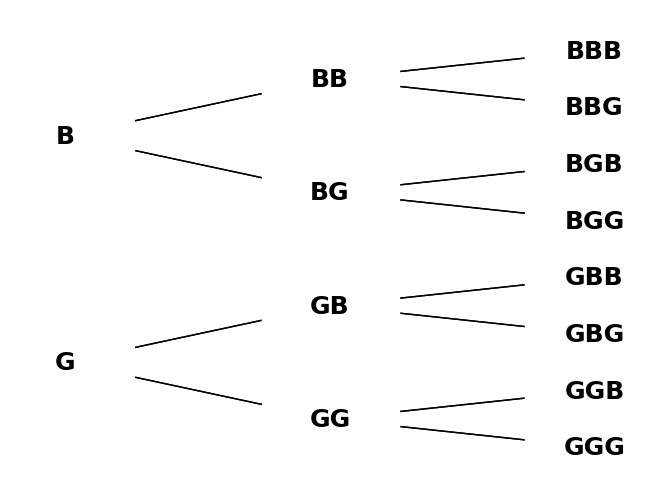
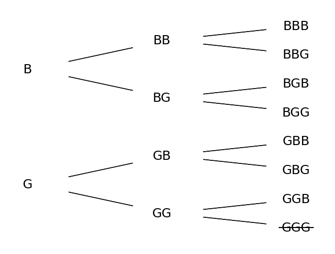
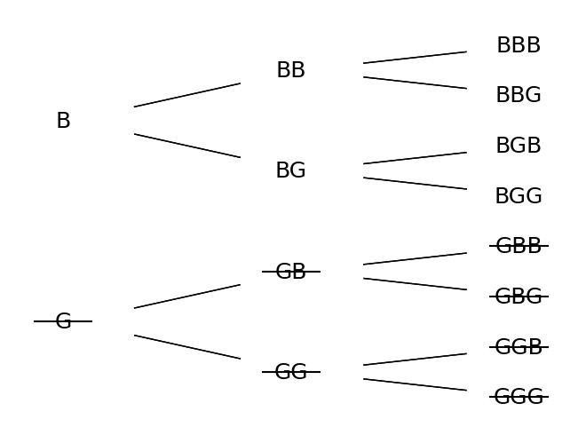
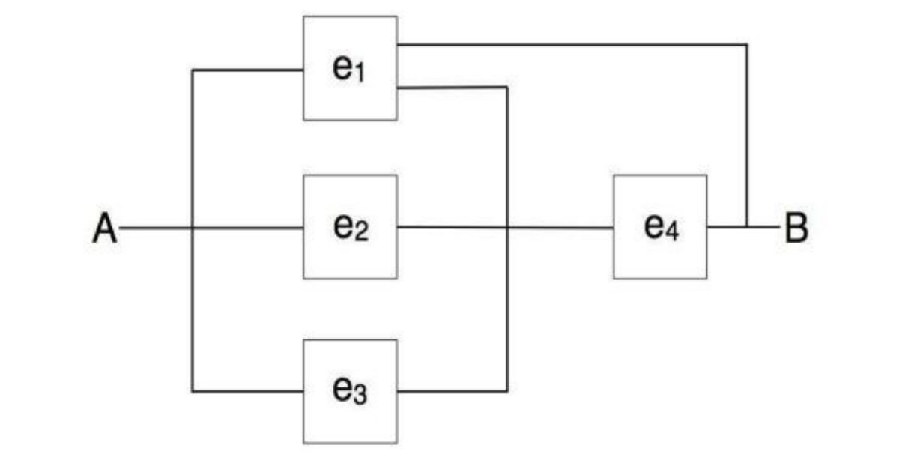
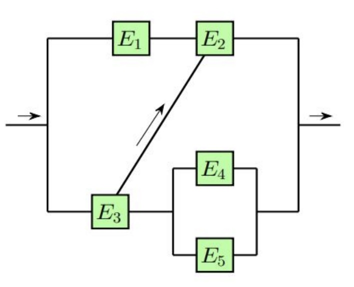

Supplementary Exercises*#
Warning
This page contains solutions! We recommend attempting each problem before peeking.
1. New neighbors#
A family with two primary-school children just moved in next door. You have not seen the children yet. Consider two scenarios:
This morning you introduced yourself to the neighbor and asked whether he has any boys. He said: Yes. What is the probability that one child is a girl, assuming he is telling the truth?
This morning you saw one of the children, a boy. What is the probability that one child is a girl?
In other words, you are either told that there is a boy in family (1) or you saw that there is a boy (2). Why then do the probabilities in (1) and (2) differ? Assume that the probability of a boy or a girl is \(\frac{1}{2}\), and that the genders of the two children are independent.
Solution
These questions are attempting to teach something fundamental about probability. The procedure itself isn’t difficult, but can be very unintuitive, so don’t be worried if it takes time to understand fully.
Our full sample space is \(S = BB, BG, GB, GG\). All four outcomes are equally likely.
You were told that there is a boy among children which excludes the outcome \(GG\). Now the sample space becomes \(S = BB, BG, GB\) and 2 out of 3 are include \(G\). The probability is \(\frac{2}{3}\).
If a boy is seen, then the event ‘one girl in the family’ is equivalent to the event that the child that we did not see was a girl. The sample space is then reduced to \(S = BB, BG\). This probability is \(\frac{1}{2}\).
Why the difference? In scenario 2, the information is the result of a random outcome. In scenario 1, the information obtained is not the result of a random outcome. Except for eliminating the outcome \(GG\), the neighbor’s statement does not provide any information about the remaining outcomes. The principle of insufficient reason prescribes that if there is no reason to think that one of the three remaining elementary outcomes \(BB\), \(BG\), or \(GB\) is more probable than another, then one should assign equal probability to each.
What does the sample space order describe here? It isn’t about which child is older—it’s about the order you see them in. It is a reflection of the state of our knowledge and precisely how different pieces of evidence affect that state.
A similar unintuitive result is the famous Monty Hall problem, where switching doors improves the probability of a win.
2. New neighbors with three children#
You just got new neighbors, a family with three elementary school children. You have not seen the children yet. Consider two scenarios:
This morning you met the neighbor and asked whether he has any boys. He answers: Yes. What is the probability that exactly one child is a girl, assuming your neighbor is telling the truth?
This morning you saw one of the children, a boy. What is the probability that exactly one child is a girl?
In other words, you are either told that there is a boy in family (1) or you saw that there is a boy (2). Why then do the probabilities in (1) and (2) differ? Find the probabilities and explain. Assume that the probability of a boy or a girl is \(\frac{1}{2}\), and that the genders of the three children are independent.
Solution
Original sample space (length 8):
Here is a branching diagram:

New information in scenario 1 reduces S to a length of 7:

\(3/7\) have exactly one G.
In scenario 2, the length of S reduces to 4:

\(2/4\) have exactly one G.
The answers would change if we were wondering about the probability of there being at least one girl, to \(6/7\) and \(3/4\).
The key to thinking about these problems is in understandting the difference between the types of information received. If you see a boy after being told that there’s at least one boy, that tells you what, exactly? What additional information have you gained? The next child you see will still either be a boy or a girl, but now you know which one you’ve seen first.
3. Queen of spades revisited#
From the standard deck of 52 cards, the 2 of diamonds, 3 of spades, 4 of clubs, and 5 of hearts are removed. From the remaining cards, one card is selected at random.
Are the events A - the selected card is queen, and B - the selected card is a spade, independent?
What is the answer to (a) if from the standard deck both red suits are eliminated, and prior to selecting a card, the deck contains only spades and clubs suits?
Solution
Events \(A\) and \(B\) are independent since \(\frac{1}{48} = P(A \cap B) = P(A) \cdot P(B) = \frac{4}{48} \cdot \frac{12}{48}\).
Independent, for \(\frac{1}{26} = \frac{2}{26} \cdot \frac{13}{26}\).
If there are an equal number of cards left in the deck from each suit, any given suit has the same probability of drawing a queen.
In this case, if you drew a spade, heart, or club, the probability that your card is a queen will be different than the probability of a queen given that you drew a diamond. You have slightly more information about the diamonds since there are only 12 remaining in the deck (the denominator is different).
So now depending on the suit a queen might be more likely. In other words, the probability of a queen is no longer independent of the suit.
4. Multiple Choice#
A student answers a multiple choice examination question that has 4 possible answers. Suppose that the probability that the student knows the answer to a question is 0.80 and the probability that the student guesses is 0.20. If the student guesses, the student is able to eliminate two choices as wrong and guess on the remaining two choices in 40% of cases. In this case, the probability of a correct answer is \(\frac{1}{2}\). The student is able to eliminate one choice as wrong and guess on the remaining three choices in 30% of cases, and for 30% of questions, the student is not able to eliminate any choice and the probability of a correct answer is \(\frac{1}{4}\).
What is the probability that the randomly selected question is answered correctly?
If it is answered correctly, what is the probability that the student really knew the correct answer?
Solution
Let \(H_1\) be the hypothesis that the student knows the question, \(H_2\) is the event that the student guesses and was able to eliminate correctly two choices as wrong, \(H_3\) is the event that the student guesses and eliminates correctly one choice as wrong, and \(H_4\) is the event that student guesses and is not able to eliminate any of the choices as wrong. It is given that \(P(H_1) = 0.8\), \(P(H_2) = 0.2 \cdot 0.4 = 0.08\), \(P(H_3) = 0.2 \cdot 0.3 = 0.06\), and \(P(H_4) = 0.2 \cdot 0.3 = 0.06\).
Denote by \(A\) the event that the student answers the question correctly. Then, \(P(A | H_1) = 1\), \(P(A | H_2) = \frac{1}{2}\), \(P(A | H_3) = \frac{1}{3}\), and \(P(A | H_4) = \frac{1}{4}\). Using the rule of total probability, the required probability in (A) is
In (B) we are interested in \(P(H_1 | A)\) and this can be found using Bayes’ rule.
5. Classifier#
In a machine learning classification procedure, the items are classified as 1 or 0. Based on a training sample of size 120 in which there are 65 1’s and 55 0’s, the classifier predicts 70 1’s and 50 0’s. Out of 70 items predicted by the classifier as 1, 52 are correctly classified.
What are the sensitivity and specificity of the classifier?
From the population of items where the proportion of 0-labels is 95% (and 1-labels 5%), an item is selected at random. What is the probability that the item is of label 1 if the classifier says it was?
Solution
Based on the problem statement, we have the following information. By the law of Total Probability and Bayes’ rule, we have:
Here, the sensitivity of the classifier is \(\frac{52}{65} = 0.8\) and the specificity is \(\frac{37}{55} \approx 0.67272\). Since the prevalence of 1’s is only 5%, the positive predicted value, that is \(P(\text{item} = 1 \mid \text{cls} = 1)\), is only \(11.4\%\). This is the source of the “prosecutor’s paradox”.
6. Alzheimer’s#
A medical research team wished to evaluate a proposed screening test for Alzheimer’s disease. The test was given to a random sample of 450 patients with Alzheimer’s disease and to an independent sample of 500 subjects without symptoms of the disease. The two samples were drawn from the population of subjects who are 65 years old or older. The results are as follows:
Test Result |
Diagnosed Alzheimer’s, \(D\) |
No Alzheimer’s Symptoms, \(D^c\) |
Total |
|---|---|---|---|
Positive Test, T |
436 |
5 |
441 |
Negative Test, \(T^c\) |
14 |
495 |
509 |
Total |
450 |
500 |
950 |
Probability of D (prevalence) is the rate of the disease in the relevant population (\(\ge 65\) y.o.) and it is estimated to be 11.3 (Evans and others [1990]).
Using the numbers from the table, estimate \(P(T | D)\) and \(P(T^c | D^c)\). Interpret these probabilities in terms of the problem, one sentence for each.
Find \(P(D | T)\) (positive predicted value) using Bayes’ formula. You cannot find \(P(D | T)\) using information from the table only - you need external info, such as prevalence.
Solution
\(P(T | D) = \frac{436}{450} = 0.9689\) \(P(T^c | D^c) = \frac{495}{500} = 0.99\)
\(P(T | D)\) is the probability that a patient who shows symptoms of Alzheimer’s disease would test positive. This is known as the test’s sensitivity. \(P(T^c | D^c)\) is the probability that a subject who does not have symptoms of Alzheimer’s would test negative. This is known as the test’s specificity.
\(P(T^c | D) = 1 - P(T | D) = 0.0311\) \(P(T | D^c) = 1 - P(T^c | D^c) = 0.01\)
To find \(P(D | T)\), which is the positive predictive value, we use:
Expanding \(P(T)\) using the law of total probability:
Substituting the values:
\(P(D | T) = 0.9251\) indicates the probability that a patient who tests positive actually has Alzheimer’s disease.
7. Mysterious Transfer#
Of two bags, one contains four white balls and three black balls and the other contains three white balls and five black balls. One ball is randomly selected from the first bag and placed unseen in the second bag.
What is the probability that a ball now drawn from the second bag will be black?
If the second ball is black, what is the probability that a black ball was transferred?
Solution
The solution requires using the rule of total probability, where the event of interest is \(A\) - a ball drawn from the second box is black, and the hypotheses are \(H_1\) - transferred ball is white and \(H_2\) - transferred ball is black. By accounting for the content of the first box, we find \(P(H_1) = \frac{4}{7}\)and \(P(H_2) = \frac{3}{7}\). The probability \(P(A | H_1) = \frac{5}{9}\) since after the transfer there are 4 white and 5 black balls in the second box. Similarly, \(P(A | H_2) = \frac{6}{9}\).
The probability of selecting a black ball from the second box is
By Bayes’ rule:
8. NIR and Raman in Parkinson’s#
In a study by Schipper et al. (2008), 53 subjects, 21 with mild or moderate stages of Parkinson’s disease and 32 age-matched controls, had whole blood samples analyzed using the near-infrared (NIR) spectroscopy and Raman spectroscopy methods. The data showed that the two independent biospectroscopy measurement techniques yielded similar and consistent results. In differentiating Parkinson’s disease patients from the control group, Raman spectroscopy resulted in eight false positives and four false negatives. NIR spectroscopy resulted in four false positives and five false negatives.
For both methods, find the Positive Predicted Value, that is, the probability that a person who tested positive and was randomly selected from the same age group in the general population has the disease if no other clinical information is available. Use the assumption that the population prevalence is well estimated by the information in the table (see Vidakovic [2017] p. 137).
Solution
There are 21 true Parkinson’s patients and there are 32 people as control (without Parkinson’s). We are told that for Raman spectroscopy, there are 8 FP and 4 FN. Using this info we create the following confusion matrix:
The Positive Predictive Value (PPV = \(\frac{TP}{TP + FP}\)) is \(\frac{17}{25}\).
For NIR spectroscopy, we have:
The Positive Predictive Value (PPV = \(\frac{TP}{TP + FP}\)) is then \(\frac{16}{20}\).
9. Twins#
Dizygotic (fraternal) twins have the same probability of each gender as in overall births, which is approximately 51% male, 49% female. Monozygotic (identical) twins must be of the same gender. Among all twin pregnancies, about 1/3 are monozygotic. Find the probability of two girls in
Monozygotic pregnancy (assuming that monozygotic twins have the same probability of each gender as in overall births).
Dizygotic pregnancy.
Dizygotic pregnancy given that we know that the gender of the babies is the same.
Probability of dizygotic pregnancy given that we know that the gender of the babies is the same.
If Mary is expecting twins, but no information about the type of pregnancy is available, what is the probability that the babies are
Two girls.
Of the same gender.
Find the probability that Mary’s pregnancy is dizygotic if it is known that the babies are two girls. Retain four decimal places in your calculations.
Hints: (2) genders are independent; (3) since \(A\) is a subset of \(B\), \(A \cap B = A\) and \(P(A | B) = P(A)/P(B)\); (4, 5) total probability; (6) Bayes’ rule.
Solution
0.49
\(0.49^2 = 0.2401\)
Let \(S\) be the event that the sex is the same, and \(D\) the event of dizygotic pregnancy. \(P(GG | S, D) = \frac{P(GG \cap S | D)}{P(S | D)} = \frac{P(GG | D)}{P(S | D)} = \frac{0.49^2}{0.49^2 + 0.51^2} = 0.48\)
This is Bayes’ formula. \(S\) — same gender, hypotheses \(H_1\) — monozygotic, \(H_2\) — dizygotic \(P(H_1) = \frac{1}{3}\), \(P(H_2) = \frac{2}{3}\), \(P(S | H_1) = 1\), \(P(S | H_2) = 0.49^2 + 0.51^2 = 0.5002\).
\(GG\)- two girls, \(P(GG | H_1) = 0.49\); \(P(GG | H_2) = 0.49^2\);
Done in part (d) as the denominator: \(0.6668\).
\(P(H_2 | GG) = \frac{P(GG | H_2)P(H_2)}{P(GG)} = \frac{0.49^2 \cdot \frac{2}{3}}{0.3234} = 0.4949\)
10. Hexi#
There is a 10% chance that pure breed German shepherd Hexi is a carrier of canine hemophilia A. If she is a carrier, there is a 50−50 chance that she will pass the hemophiliac gene to a puppy. Hexi has two male puppies and they are tested free of hemophilia. What is the probability that Hexi is a carrier, given this information about her puppies?
Solution
Problem setup and term definitions
\(A\): The event that two male puppies are disease free.
\(H_1\): The event that Hexi is a carrier.
\(H_1^c\): The event that Hexi is not a carrier.
\(P(H_1) = .1\)”There is a 10% chance … Hexi is a carrier.”
\(P(H_1^c) = .9\)
Independence comes into play with \(P(A\mid H_1)\):
\(P(A\mid H_1) = .5 \times .5\)”… if (Hexi) is a carrier, there is a 50–50 chance …”
Presumably, if she is not a carrier, there is a 100% chance her puppies will not have the disease:
\(P(A\mid H_1^c)=1\)
Understanding the problem
Bayes rule:
\(P(H_1\mid A)=\frac{P(A \mid H_1)P(H_1)}{P(A)}\)
The question asks for the probability that Hexi is a carrier “given this information about her puppies,” so know we immediately know this is a conditional probability. Based on how we’ve defined events above, we want \(P(H_1\mid A)\).
We have an original, baseline value for \(P(H_1)\), so we should see that we are updating that value given new evidence, that evidence being that two puppies are free of the disease. This points us to Bayes’ rule. We also already know \(P(A|H_1)\). All we need is \(P(A)\), which we can get using the law of total probability.
Using the law of total probability to find P(A)
Law of total probability:
Using Bayes’ rule
Does this answer make sense intuitively? Our evidence is against Hexi being a carrier, and \(.\overline{027} \lt .1\), so yes.
Considering each puppy separately
Same setup as above, except we will define \(B\)as the event where one puppy does not have the disease (\(P(B) = .5\)).
Now our new \(H_1\) is the above. We can update again, performing the exact same steps with a second event \(B\), just replacing \(H_1\)with this new value. I’m using 5 decimal points while writing this out but actually using exact values for the calculations.
11. Playing Dice at the Casino#
You play the following game in a casino. You roll a pair of fair dice and then the croupier rolls a pair of fair dice as well. If the sum on the croupier’s dice is larger or equal than on yours, the casino wins. If the sum on your dice is strictly larger than 3 on croupier’s, you win.
What is the probability that you win?
If it is known that you won, what is the probability that croupier obtained a sum of 9?
What is the expected croupier’s sum if you won? Note that without any information on winners, the expected sum for both you and the croupier is 7.
Solution
\(P(\text{Sum} = i) = \begin{cases} \frac{i-1}{36}, & 2 \leq i \leq 7 \\ \frac{13-i}{36}, & 7 \leq i \leq 12 \end{cases}\)
By Bayes’ formula:
Expectation of croupier’s sum if you won is
We already found that for \(i = 9\), the probability is \(\frac{24}{575}\). It is straightforward to find probabilities for other values of \(i\) and calculate the expectation. We can do it with the following Python script:
See hidden code cell below.
If you won, we expect that the croupier got the sum of \(\frac{3136}{575} \approx 5.454\). This is less than 7 – the expectation without any information.
Show code cell content
import numpy as np
import random
casino = np.array(range(2, 13))
prob = np.array([35, 66, 90, 104, 105, 90, 50, 24, 9, 2, 0]) / 575
np.dot(casino, prob) # 5.454
n = 1000000
won = 0
for x in range(n):
you = random.randint(1, 6) + random.randint(1, 6)
casino = random.randint(1, 6) + random.randint(1, 6)
if casino < you:
won += 1
print("Approx Prob of Winning =", won / n)
12. Redundant Wiring#
In the circuit shown in the figure below, the electricity is to move from point A to point B.

The four independently working elements in the circuit are operational (and the current goes through) with probabilities given in the table
Element |
\(e_1\) |
\(e_2\) |
\(e_3\) |
\(e_4\) |
|---|---|---|---|---|
Operational with prob |
0.5 |
0.2 |
0.3 |
0.8 |
If an element fails, the current is not going through.
Is it possible to save on the wire that connects the elements without affecting the functionality of the network? Explain which part of wiring can be removed.
Find the probability that the electricity will flow from A to B.
Solution
Hint: Although this configuration can be analyzed directly, it is simpler to condition on the element \(e_1\)and apply the Formula of Total Probability.
\(e_1 = 0.5\)
\(e_2 = 0.2\)
\(e_3 = 0.3\)
\(e_4 = 0.8\)
\(H_1 = e_1 \text{ working}\)
\(H_2 = e_1 \text{ not working}\)
\(P(B) = P(B|H_1)P(H_1) + P(B|H_2)P(H_2)\)
If \(e_1\) is not working (\(H_2\)):
Call the parallel connection circuit \(C\):
\(P(C) = 1 - q_{e_1}q_{e_2}q_{e_3}\)
\(P(C) = 1 - (1)(0.8)(0.7) = 1 - .56 = .44\)
Then it’s a serial connection with \(C\) and \(e_4\):
\(P(B|H_2) = P(C)P(e_4) = (0.44)(0.8) = 0.352\)
If \(e_1\) is working (\(H_1\)):
We have a direct connection: \(P(B|H_1) = P(e_1) = 1\)
All together:
\(P(B) = P(B|H_1)P(H_1) + P(B|H_2)P(H_2)\)
\(P(B) = (1)(0.5) + (0.352)(0.5) = 0.676\)
Thinking about whether the redundancy is worth it. What would the circuit look like without it?
What is \(P(B)\) without it?
Same as the \(H_2\) calculation except \(q_{e_1} = 0.5\):
\(P(C) = 1 - q_{e_1}q_{e_2}q_{e_3}\)
\(P(C) = 1 - (0.5)(0.8)(0.7) = 0.72\)
\(P(B_{\text{no redundancy}}) = P(C)P(e_4) = (0.72)(0.8) = 0.576\)
So, \(P(B) > P(B_{\text{no redundancy}})\).
13. Cross-linked System#
Each of the five components in a cross-linked system is operational in a time interval \([0, T]\) with the probability of 0.6. The components are independent. Let \(E_i\) denote the event that \(i\)-th component is operational at time \(T\)and \(E_i^c\) that it is not. Denote by \(A\) the event that the system is operational at time \(T\).

Find the probabilities of events \(H_1 = E_2^c E_3^c\), \(H_2 = E_2^c E_3\), \(H_3 = E_2 E_3^c\), and \(H_4 = E_2 E_3\). Do these four probabilities sum up to 1?
What is the probability of the system being operational if \(H_1\)is true; that is, what is \(P(A | H_1)\)? Find also \(P(A | H_2)\), \(P(A | H_3)\) and \(P(A | H_4)\).
Using results in (a) and (b), find \(P(A)\).
Solution
Hint: \(P(A | H_1) = 0\), \(P(A | H_2) = 1 - 0.4 \cdot 0.4\), \(P(A | H_3) = 0.6\), \(P(A | H_4) = 1\)
See hidden code cell below.
Show code cell content
p = 0.6
q = 1 - p
# P(H_i)
H_1 = q**2
H_2 = q * p
H_3 = H_2
H_4 = p**2
# part a
print(H_1, H_2, H_3, H_4)
print(sum([H_1, H_2, H_3, H_4]))
# part b
# P(A|H_i)
# if neither E_2 or E_3 are working, there's no viable path
p_ah1 = 0
# if E_2 isn't working, then only the E_3 -> E_4/E_5 path is possible
p_ah2 = 1 - q**2
# if E_3 isn't working, only the top path will work
p_ah3 = p
# If E_3 and E_2 are assumed working, there is one guaranteed path for P(A) on the crosslink
p_ah4 = 1
# part c
p_A = p_ah1 * H_1 + p_ah2 * H_2 + p_ah3 * H_3 + p_ah4 * H_4
print(p_A) # .7056
Note
The following Bayes Network problems may be solved in many ways, including PyMC or other PPLs. OpenBUGS solutions are available at the old class website. PPLs will not be required or allowed on the midterm, nor do we emphasize these types of problems because they can be so time-consuming.
14. Sprinkler Bayes Net#
Suppose that a sprinkler (S) or rain ® can make the grass in your yard wet (W). The probability that the sprinkler was on depends on whether the day was cloudy ©. The probability of rain also depends on whether the day was cloudy. The DAG for events \(C\), \(S\), \(R\), and \(W\)is shown below:
The conditional probabilities of the nodes are given in the following tables:
Approximate the probabilities:
\(P(C | W)\)
\(P(S | W^c)\)
\(P(C | R, W^c)\)
Solution
See the hidden code cell below for an exact calculation in Python, contributed by Jason Naramore.
Show code cell content
# W = Wet, C = Cloudy, S = Sprinkler, R = Rain
#'n' represents 'not'
p_W_C_S_R = 0.5 * 0.1 * 0.8 * 0.99
p_W_C_S_Rn = 0.5 * 0.1 * 0.2 * 0.9
p_W_C_Sn_R = 0.5 * 0.9 * 0.8 * 0.9
p_W_C_Sn_Rn = 0.5 * 0.9 * 0.2 * 0
p_W_Cn_S_R = 0.5 * 0.5 * 0.2 * 0.99
p_W_Cn_S_Rn = 0.5 * 0.5 * 0.8 * 0.9
p_W_Cn_Sn_R = 0.5 * 0.5 * 0.2 * 0.9
p_W_Cn_Sn_Rn = 0.5 * 0.5 * 0.8 * 0
# combine cloudy and not cloudy terms
p_C = p_W_C_S_R + p_W_C_S_Rn + p_W_C_Sn_R + p_W_C_Sn_Rn
p_Cn = p_W_Cn_S_R + p_W_Cn_S_Rn + p_W_Cn_Sn_R + p_W_Cn_Sn_Rn
# P(C|W)
print(p_C / (p_C + p_Cn))
# output = 0.5757997218358832
15. Simple Diagnostic Bayes Network#
Incidences of diseases \(A\) and \(B\) depend on the exposure (E). Disease \(A\) is additionally influenced by risk factors ®. Both diseases lead to symptoms (S). Results of the test for disease \(B\)(\(T_B\)) are affected also by disease \(A\). Positive test will be denoted as \(T_B = 1\), negative as \(T_B = 0\). The Bayes Network and needed conditional probabilities are shown in Figure.
The probabilities of nodes are as follows:
What is the probability of disease \(B\), if disease \(A\) is not present, but symptoms \(S\) are present?
What is the probability of exposure \(E\), if symptoms are present \(S\) and test for \(B\) is positive?
Solution
See hidden code cell below.
‘P(B|A=0, S=1) = 0.8841’
‘P(E|S=1, T_B=1) = 0.5635’
Show code cell content
import pymc as pm
import numpy as np
import pytensor
import pytensor.tensor as pt
# PyMC solution based on this notebook:
# https://gist.github.com/Dekermanjian/35aa0340c673cb6cc7f9fbd95e8e764d
table_A = pytensor.shared(np.array([[0.9, 0.1], [0.5, 0.5]]))
table_B = pytensor.shared(
np.array([[[0.95, 0.05], [0.8, 0.2]], [[0.7, 0.3], [0.25, 0.75]]])
)
table_S = pytensor.shared(
np.array([[[0.99, 0.01], [0.5, 0.5]], [[0.8, 0.2], [0.4, 0.6]]])
)
table_T_B = pytensor.shared(
np.array([[[0.99, 0.01], [0.2, 0.8]], [[0.95, 0.05], [0.15, 0.85]]])
)
def lookup_A(E):
return table_A[E]
def lookup_B(E, R):
return table_B[E, R]
def lookup_S(A, B):
return table_S[A, B]
def lookup_T_B(A, B):
return table_T_B[A, B]
with pm.Model() as m:
E = pm.Categorical("E", p=np.array([0.8, 0.2]))
R = pm.Categorical("R", p=np.array([0.7, 0.3]))
A = pm.Categorical("A", p=lookup_A(E))
B = pm.Categorical("B", p=lookup_B(E, R))
S = pm.Categorical("S", p=lookup_S(A, B))
T_B = pm.Categorical("T_B", p=lookup_T_B(A, B))
prior_trace = pm.sample_prior_predictive(100000)
prior_trace_dict = {
"E": prior_trace.prior["E"],
"R": prior_trace.prior["R"],
"A": prior_trace.prior["A"],
"B": prior_trace.prior["B"],
"S": prior_trace.prior["S"],
"T_B": prior_trace.prior["T_B"],
}
def conditional_probabilities(trace, var, conditions):
subset = np.all(
[trace[k].values == v for k, v in conditions.items()], axis=0
)
prob = np.mean(trace[var].values[subset])
return prob
P_B_given_A0_S1 = conditional_probabilities(
prior_trace_dict, "B", {"A": 0, "S": 1}
)
P_E_given_S1_T_B1 = conditional_probabilities(
prior_trace_dict, "E", {"S": 1, "T_B": 1}
)
# print(f"P(B|A=0, S=1) = {P_B_given_A0_S1}") # ~ 0.8899
# print(f"P(E|S=1, T_B=1) = {P_E_given_S1_T_B1}") # ~ 0.5571
from myst_nb import glue
glue("glued_txt_15_1", f"P(B|A=0, S=1) = {round(P_B_given_A0_S1, 4)}")
glue("glued_txt_15_2", f"P(E|S=1, T_B=1) = {round(P_E_given_S1_T_B1, 4)}")
Sampling: [A, B, E, R, S, T_B]
'P(B|A=0, S=1) = 0.8841'
'P(E|S=1, T_B=1) = 0.5635'
16. Smart Alarm#
Your house has a “smart” alarm system that warns you against burglary with a long sound. The house is located in a seismically active area and the alarm system will emit a short sound if set off by an earthquake. The alarm can sound either way by error, or nor sound even in the case of earthquake or burglary. You have two neighbors, Mary and John, who do not know each other. If they hear the alarm they call you, but this is not guaranteed. The likelihood of their call depends on type of sound if any. They also call you from time to time just to chat. The probabilities are:
Write BUGS code to approximate conditional probabilities of nodes given the evidence.
Find the probability of a burglary if a short sound was emitted by the alarm;
Find the probability of Mary calling you if John called you;
Find the probability of a short sound if John called you and there was no earthquake;
Find the probability of any sound if there was no burglary and Mary did not call you;
Find the probability of an earthquake if a long sound was emitted by the alarm.
Solution
See Unit 3 Lesson 8.